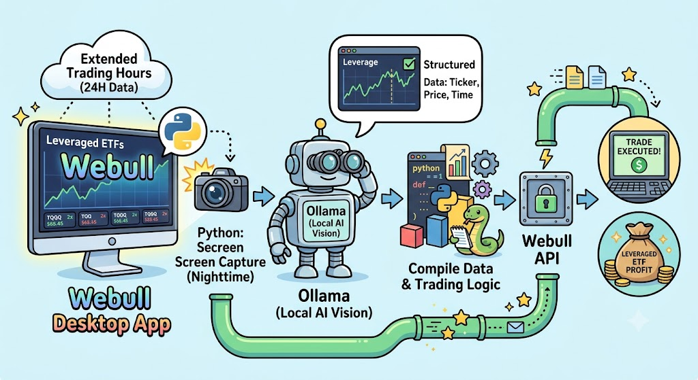

Project 1: Swing Trade Engine
A rule‑based swing trading system using technical indicators, risk controls, and automated execution. Includes monitoring, logging, and performance analytics. I am utilizing the Webull API via python to run throughout the trading day. Price Data is scrapped from Yahoo Finance API. Challenges occur due to the data feed being different from data within the Webull app. This is not avaiblile via the API. Trading costs are only 2 cents per transaction, nice.

Project 2: Overnight Trading
Problem: Double leveraged ETFs can trade 24 hours a day! To compile this feed, we need to pay for a data service. However, the data exists in the Webull Desktop App but is not accessible via the Webull API. I created a pipeline to capture screen images of the app, access the image, compile the data , and execute trades. Utilizing the Webull API, Ollama for local LLM, and python code that runs throughout the extended trading hours to capture the nighttime trading data.